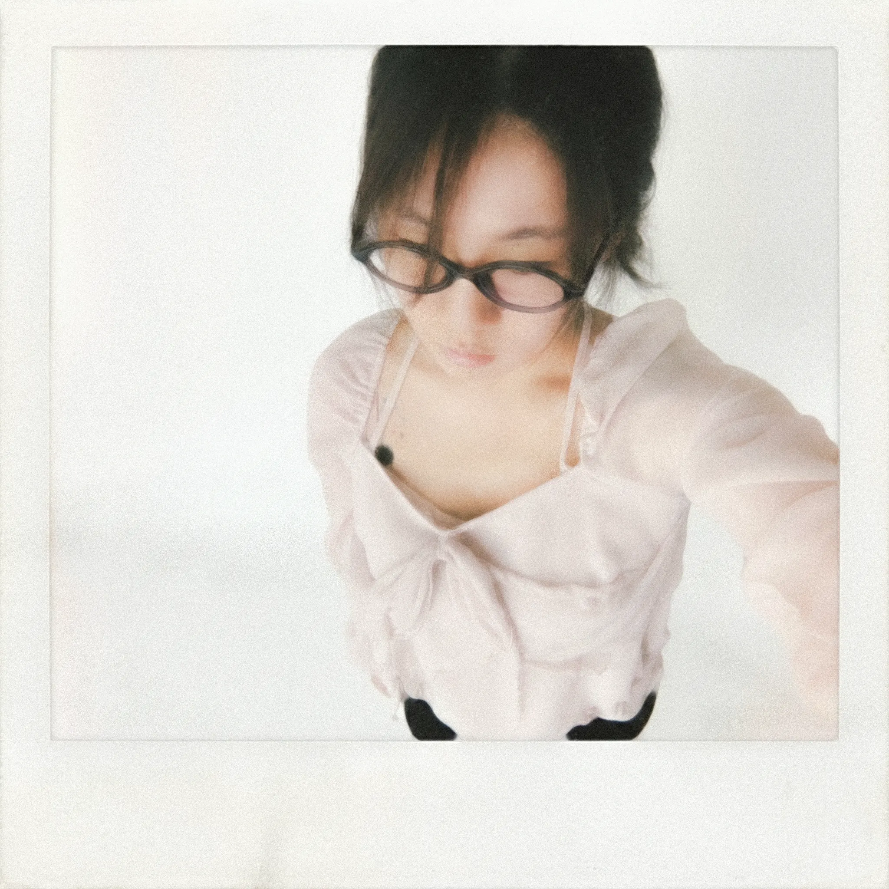

Juyoung's Personal Portfolio
Juyoung's room *⋆꒰ঌ(⁎ᴗ͈ˬᴗ͈⁎)໒꒱⋆*
I'd love to work in graphic design and marketing!
I'd love to work in graphic design and marketing!
This is just the beginning-
I'm planning to fill this space with more projects I love(⸝⸝º ^ º⸝⸝ )
rooted in my passion for music, film, and storytelling through design ♡
I'm planning to fill this space with more projects I love(⸝⸝º ^ º⸝⸝ )
rooted in my passion for music, film, and storytelling through design ♡
